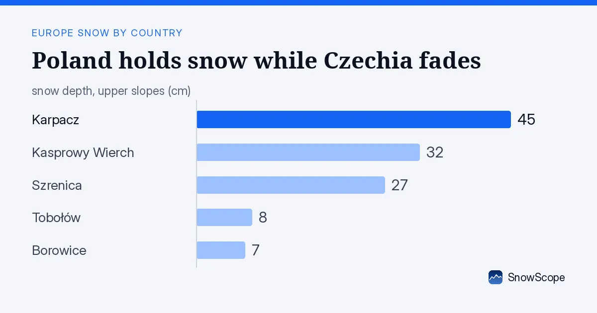
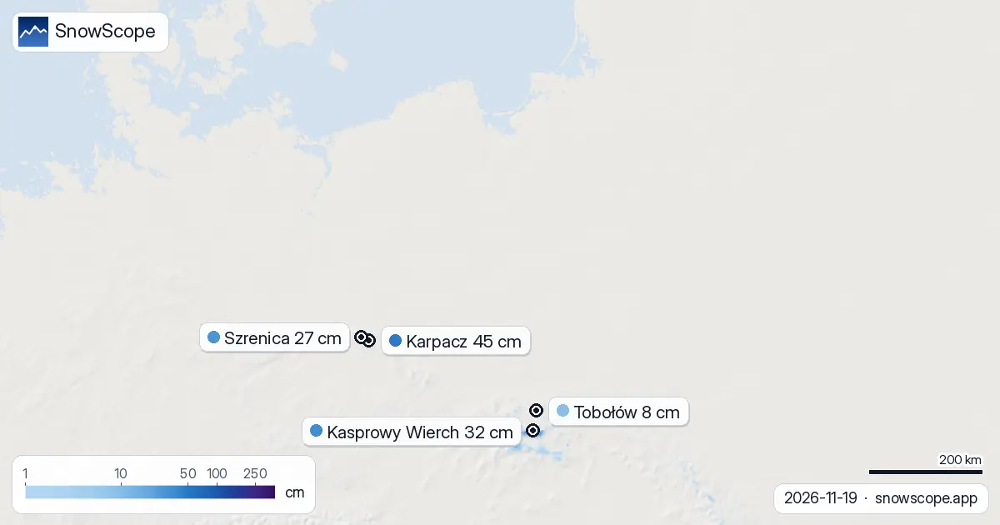
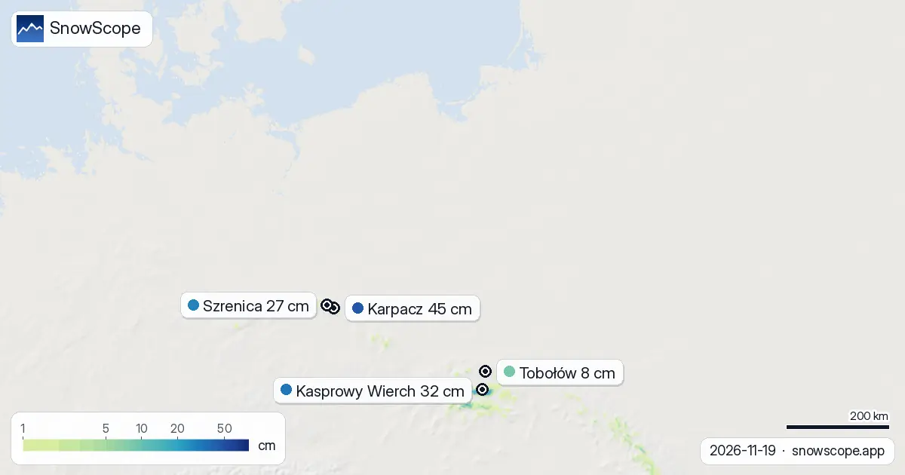

Poland holds snow while Czechia fades: 3% coverage against zero
Poland still has measurable snow across 370 square kilometres of ski terrain, mostly in the high ranges, while Czechia's cover has vanished to zero. Karpacz in the Karkonosze keeps the deepest snow in the region at 45 cm, but the story of these two neighbours tells a stark tale of how quickly autumn melt can erase early-season snow.
See the live snow forecast for Karpacz in the SnowScope appSnow depth, powder alerts and the 3D map, free.
Poland ahead, but the gap is closing
Three per cent of Poland's ski terrain is white today, compared with nothing in Czechia. That sounds like a lead, but it is fragile. We had snow on 11% of Poland just a week ago; the melt from warmer air last week knocked out two-thirds of that cover. Czechia lost its snow faster still, dropping from some early coverage to bare ground.
The snow line in Poland now sits at 1200 metres. Below that, the mountains are mostly dark. Only the highest peaks keep the white, and even there it is thin where the sun has been strong. Karpacz, at 1350 metres on the Karkonosze, still touches ground covered in 45 cm of snow. That depth is real and skis will find it. But lower resorts like Tobołów at 965 metres have only 8 cm—rocks will bite through that easily.
| Country | White | Deepest resort | Next 7 days |
|---|---|---|---|
| Poland | 3 % | Karpacz | 14 cm |
| Slovakia | 11 % | Ski centrum Dedinky | 18 cm |
| Czechia | 0 % | Lyžařský vlek Malý Šišák | 10 cm |

Where the mountains still hold snow
The Tatras have been the coldest and highest over the past three days, and it shows. That range picked up 22 cm in the last 72 hours. Kasprowy Wierch, in the Tatras, sits at 1958 metres with 32 cm already on the ground. The Beskids collected 11 cm in that same window; Karkonosze 10 cm. These three ranges are the reason Poland still has any snow to report.
Measured at the weather stations: Karpacz has taken in 9 cm over 72 hours, Szrenica 7 cm, Borowice 5 cm. The pattern is clear—height matters now, and north-facing slopes near the ridge tops will hold snow longest. South faces in lower zones are already bare. If you are thinking of early turns, go high and go soon.

Slovakia is ahead of both
Across the border, Slovakia has played this better than either Poland or Czechia. Eleven per cent of Slovak ski terrain is snow-covered, and the leader there, Ski centrum Dedinky, holds 38 cm. Slovakia also sits higher on average—its ranges are set up to catch cold air and keep it. For skiers in the region weighing their options right now, Slovakia is the safer choice if snow matters.
What the model says comes next
Tomorrow, 20 November, our snow model forecasts 6 cm across Poland as the first proper snowfall of the season pushes through. That is a turning point. Over the next three days, we expect up to 10 cm at Karpacz. Over seven days, the high ranges could see 14 cm added. Czechia should also pick up snow—10 cm in the next week—so the gap will close again.
But forecast snow can shift fast. Early-season runs are thin and the snow line will bounce around with each weather change. The coming snow will be useful, but not deep. Rocks and old ground will still show through on steep slopes and south faces.
Snow by height: everything above 1500 metres
Our model shows the temperature and snow depth by altitude band across the mapped region. Between 500 and 1000 metres, there is almost no snow—just 1% cover, nearly 0 cm mean depth. From 1000 to 1500 metres, 32% of the band is white with a mean of 2 cm. Above 1500 metres, the picture shifts: 100% cover and a mean depth of 22 cm. This is why the high resorts matter and lower ones do not.
The melt story of the week
A week ago, Poland had snow on 1050 square kilometres. Yesterday, 580. Today, 370. The trend is a thaw. The warm spell last week burned off the lower snow fast. What we have left is the stubborn bit—the high, cold stuff that will not go easily. The next snow should stop that melt, but only if it comes with colder air and sticks around.
Tips for skiers
- Go high if you go now: Kasprowy Wierch and Karpacz have the most snow. Lower resorts below 1000 metres will have too many bare patches.
- Watch for rocks: mean depths of 2 cm at mid-altitude hide a lot of ground. Test the snow before committing to a line.
- Check the forecast for 20 November. That is when new snow arrives in our model. Snow depth should improve over the next week if the system tracks as expected.
- If Czechia is your plan, wait until after the snowfall. Zero cover now means poor skiing; 10 cm in a week means it will be worth the drive.
- Early-season snow is often sticky and hard. Expect variable conditions. Consult the official avalanche bulletin for your range before going off-piste.
About these numbers
Resort snow depths are the deepest snow on the resort's upper slopes from the SnowScope snow model (about 1 km, run of 19 November); they are estimates for an area, not a measurement at one point. Station values are measurements on the date shown. Forecasts can change. Always read the official avalanche bulletin before going off-piste.
Cite this report
For research, teaching or the press: the numbers and charts are free to reuse under CC BY 4.0 with this citation.
SnowScope (2026), Poland holds snow while Czechia fades: 3% coverage against zero, https://snowscope.app/blog/en/2026/11/poland-snow-vs-neighbours-19-november-2026.html, accessed 2026-11-19
SnowScope (Atlas Labs). (2026, November 19). Poland holds snow while Czechia fades: 3% coverage against zero. SnowScope snow reports. https://snowscope.app/blog/en/2026/11/poland-snow-vs-neighbours-19-november-2026.html
BibTeX
@misc{snowscope2026polandsnowvsneighbours19,
author = {{SnowScope (Atlas Labs)}},
title = {Poland holds snow while Czechia fades: 3% coverage against zero},
year = {2026},
month = nov,
howpublished = {\url{https://snowscope.app/blog/en/2026/11/poland-snow-vs-neighbours-19-november-2026.html}},
note = {Published 2026-11-19 13:58 UTC; accessed 2026-11-19}
}· CC BY 4.0 · Methods, data and tools →
Karpacz: snow and temperature by height, this winter vs last (tools) →
Follow Karpacz
Free: a message when fresh snow is coming, and the forecast every morning.
More snow reports

We compared the snow on 10 November with each winter's deepest snow at 46 ski resorts over 46 winters. A snowy start helps, but less than many skiers think.

Ukraine's snow cover dropped to 6% today as the Carpathians melt back. Poland holds twice the white share. Both countries face fresh snow by Friday.

Slovakia's snow cover dropped to 1,830 km2 today. Snow sits mostly above 1,200 m; the High Tatras and Low Tatras lead with 8 cm of new snow in 72 hours.